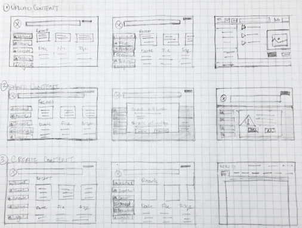

Angel Cloud Storage

I was assigned to complete my first design project on the topic of cloud storage solutions. Through research, I learned that the market for cloud storage services is dominated by big competitors such as Google Drive and Dropbox. However, these providers are often criticized for not putting sufficient security measures in place to protect user privacy. To alleviate this problem on the countless students and professionals who utilize cloud storage, I decided to create simple and secure ways to utilize content on the cloud.
Duration
16 Weeks
Design Roles
UX Research, UI Design, Branding, User Testing

Tools
Axure, Figma, Invision, Usability Hub
OVERVIEW

Angel is a mobile and desktop application designed to provide a safer way to store content on the cloud. In the a time of data breaches and unethical marketing practices, it is imperative for there to be a trustworthy service that offers simple and effective ways to keep your files out of the hands of unauthorized users.
DISCOVERY
Problem
The core problem with existing cloud storage tools is that they don’t provide users the security they need to protect their data from hackers.

Solution
To ensure that users have a peace of mind when utilizing their cloud contents, Angel allows users to securely create, organize, and share content by:
1. enabling users to choose how they share content
2. offering an automatic logout system
3. assuring users that their information is stored safely
RESEARCH
User Survey
After receiving the client brief, I began my research by conducting a user survey to understand the utilization of existing cloud storage services and to learn of any user concerns or frustrations that can be resolved through this app. The result were as follows:


SWOT Analysis
After analyzing my user survey, I went on to study my competition. I conducted a SWOT analysis on:

Based on my competitive analysis, I found implementing security features to be a big opportunity. In addition, tackling privacy and security concerns would be a differentiating factor that could set Angel apart from its competition.
View Complete SWOT AnalysisINFORMATION ARCHITECTURE
User Personas


User Flows
Then, I created user flows to break down some of the paths users would need to take to complete key tasks such as signing up, uploading, creating and sharing content.
 View All User Flows
View All User Flows
User Stories
Next, I wrote a user story with different users in mind. I identified 40 tasks in total that new, returning as well as all users would want in a new cloud storage solution. After compiling those tasks, I prioritized them in order of importance.
 View All User Stories
View All User Stories
Sketches and Wireframes
Next, I created wireframes and turned them into clickable prototypes to test my initial design for this storage service. Other than minor flaws with the sign up process, my participants found completing key tasks such as uploading, creating and sharing content to be straightward.



VISUAL DESIGN
Branding:Name, Logo, Style Guide
Next, I began to brainstorm names for my brand and came up with ‘Angel’ after mapping out words that related to my brand strategy to symbolize the protection and security. Then I went on to sketching out a few logo design ideas using pen and paper. Once I had a good idea of direction I wanted to take with the simple “A” shaped logo, I turned that into digital designs using Figma as depicted on the right.


In order to maintain consistency, I defined how the logo, color, typography and other assets are to be used in reference to this cloud storage service.
View Complete StyleguideMockups and Itterations
After solidifying some of the visuals for this cloud storage service, I applied the branding work to my high-fidelity mockups.
 View Mockups
View Mockups
Usability Testing
After running several usability tests on my mockups I obtained valuable feedback on the various components and features I incorporated. Initially, I had a serif brand typeface that I realized made the interface look outdated. In addition, I modified icons with and background shades, I settled with elements and colors that made important elements stand out while making the overall dashboard look clean and easy on the eye.
 Although testers went through the process of completing tasks smoothly, they mentioned that certain features like the session timeout warning could be more prominent, especially for the desktop version. After this feedback, I incorporated a warning icon and highlighted the timer for users to better notice the warning without having to read through the description.
Although testers went through the process of completing tasks smoothly, they mentioned that certain features like the session timeout warning could be more prominent, especially for the desktop version. After this feedback, I incorporated a warning icon and highlighted the timer for users to better notice the warning without having to read through the description.

Preference Testing
Additionally, a preference test on several areas of my design features such as whether users preferred the floating action button (FAB) or the bottom navigation tool bar. Depending on the highest rated choice and reasoning behind users’ preferences, I implemented these feedback into my final design decisions.

CONCLUSION
The main takeaway for me was how imperative testing is especially in the beginning phase of the design process. Putting multiple initial ideas in front of testers early on during the wireframe phase can save tremendous amount of time as opposed to introducing new ideas later on during the mockup stage. Even though I did not test enough ideas as I could have right after completing my wireframes, I was able to incorporate essential iterations to my prototypes through preference and usability testing.